<!DOCTYPE html>
<html lang="en" data-page="touchdesigner-architecture">
<head>
<meta charset="utf-8" />
<meta name="viewport" content="width=device-width, initial-scale=1" />
<meta http-equiv="Content-Security-Policy" content="default-src 'self' 'unsafe-inline' 'unsafe-eval' data: blob: https: http://127.0.0.1:* ws://127.0.0.1:*; img-src 'self' data: blob: https:; media-src 'self' data: blob: https:;" />
<meta http-equiv="X-Content-Type-Options" content="nosniff" />
<meta name="referrer" content="strict-origin-when-cross-origin" />
<title>TouchDesigner Grandmaster Melodia | Brennan Shepherd</title>
<meta name="description" content="TouchDesigner grandmaster page — Envoy MCP orchestration, audio-reactive beat streams, OSC routing, and worldgen preview for Melodia." />
<meta property="og:title" content="TouchDesigner Grandmaster Melodia" />
<meta property="og:description" content="Selected TouchDesigner realtime lookdev, procedural systems and diagnostics for Melodia — not Unreal gameplay." />
<meta property="og:image" content="https://fromage3900.github.io/my-site/generated/social/og-default.jpg" />
<meta property="og:url" content="https://fromage3900.github.io/my-site/wix/touchdesigner-architecture.html" />
<meta name="twitter:card" content="summary_large_image" />
<link rel="stylesheet" href="melodia-luxury-type.css">
<link rel="stylesheet" href="melodia-editorial.css">
<link rel="stylesheet" href="melodia-fashion-editorial.css">
<link rel="stylesheet" href="melodia-premium-system.css">
<link rel="stylesheet" href="melodia-visual-breakdown.css">
<link rel="stylesheet" href="portfolio-pages.css">
<link rel="stylesheet" href="escher-carousel.css">
</head>
<body>
<div class="melodia-shell fashion-mode" data-mg="soft" data-hero="editorial" data-visual="lookbook" data-effects="starfield,holo,magical" data-nav-cta="application-hub.html" data-nav-cta-label="Application hub">
<header class="shell-nav" aria-label="Portfolio navigation">
  <a class="brand" href="index.html"><span class="brand-mark" aria-hidden="true"></span>Brennan Shepherd</a>
  <nav class="nav-links" aria-label="Sections">
    <a href="index.html">Home</a>
    <a href="application-hub.html">Hub</a>
    <a href="melodia-melusina.html">Game UI</a>
    <a href="melodia-gameplay-loop.html">Loop</a>
    <a href="design-specs.html">Specs</a>
  </nav>
  <a class="nav-cta button-premium" href="application-hub.html">Application hub</a>
</header>

<main id="main">
<section class="band sx-open" aria-labelledby="td-title">
  <div class="inner">
    <p class="eyebrow magazine-kicker">TouchDesigner · real-time SSOT</p>
    <h1 id="td-title">Grandmaster Melodia in motion.</h1>
    <p class="lede">TouchDesigner handles the live lookdev layer: character and prop studies, procedural field generation, diagnostics, audio analysis, OSC routing, and beat-reactive polish. These plates are realtime process evidence — not Unreal gameplay footage.</p>
    <div class="hero-actions">
      <a class="button primary button-premium-primary" href="application-hub.html">Back to hub</a>
      <a class="button button-premium" href="../_TouchDesigner/README.md">TD workspace</a>
      <a class="button button-premium" href="design-specs.html#game-ui">Game UI specs</a>
    </div>
  </div>
</section>

<section class="band sx-feature" id="river-sanctuary-lookdev" style="background: radial-gradient(circle at top, rgba(30, 27, 75, 0.45) 0%, rgba(10, 10, 20, 0.95) 100%); border-top: 1px solid rgba(165, 180, 252, 0.15); border-bottom: 1px solid rgba(165, 180, 252, 0.15); padding: 4.5rem 0;">
  <div class="inner">
    <div class="section-head">
      <div>
        <p class="eyebrow magazine-kicker">Realtime LookDev Showcase · 4590×960 Master</p>
        <h2>River Sanctuary: Procedural Flow &amp; 5 Aesthetic Variations</h2>
      </div>
      <p>Continuous procedural drift instancing along the 876-point river centerline with real-time LookDev compositing in TouchDesigner. Locked at 60.0 FPS.</p>
    </div>

    <!-- Master Hero Preview -->
    <div class="river-sanctuary-preview-card" style="position: relative; border-radius: 16px; overflow: hidden; border: 1px solid rgba(255, 255, 255, 0.15); box-shadow: 0 24px 48px rgba(0, 0, 0, 0.6); margin-bottom: 2.5rem; background: #080a12;">
      
      <div style="position: absolute; bottom: 0; left: 0; right: 0; padding: 1.5rem 2rem; background: linear-gradient(to top, rgba(10, 10, 20, 0.92) 0%, rgba(10, 10, 20, 0.6) 60%, transparent 100%); display: flex; justify-content: space-between; align-items: flex-end; flex-wrap: wrap; gap: 1rem;">
        <div>
          <span style="display: inline-block; padding: 0.25rem 0.65rem; border-radius: 999px; background: rgba(99, 102, 241, 0.35); border: 1px solid rgba(165, 180, 252, 0.5); font-size: 0.72rem; font-family: monospace; text-transform: uppercase; color: #c7d2fe; margin-bottom: 0.4rem;">Live Master Plate</span>
          <h3 id="rs-master-title" style="margin: 0; font-size: 1.35rem; color: #ffffff; font-weight: 600;">Celestial Twilight Sanctuary</h3>
          <p id="rs-master-desc" style="margin: 0.25rem 0 0; color: #cbd5e1; font-size: 0.88rem;">Sacred Indigo Nocturne · Kira Star Sparkles · Pale Cyan Mist</p>
        </div>
        <div style="font-family: monospace; font-size: 0.78rem; color: #94a3b8; text-align: right;">
          <div>Res: 4590 × 960 (native)</div>
          <div>FPS: 60.0 locked · 0 cook errors</div>
        </div>
      </div>
    </div>

    <!-- 5 Interactive Variation Selectors -->
    <div class="rs-variants-grid" style="display: grid; grid-template-columns: repeat(auto-fit, minmax(200px, 1fr)); gap: 1rem; margin-bottom: 3rem;">
      
      <div class="rs-variant-btn is-active" data-id="variant_1_celestial_twilight" data-title="Celestial Twilight Sanctuary" data-desc="Sacred Indigo Nocturne · Kira Star Sparkles · Pale Cyan Mist" style="cursor: pointer; border-radius: 12px; overflow: hidden; border: 2px solid #818cf8; background: rgba(255, 255, 255, 0.04); transition: transform 0.2s ease, border-color 0.2s ease;">
        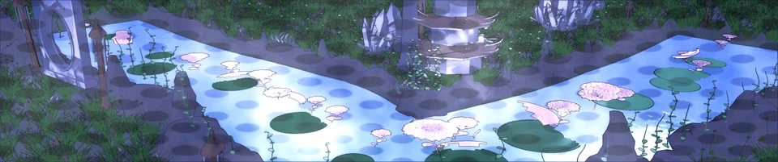
        <div style="padding: 0.75rem 1rem;">
          <strong style="display: block; font-size: 0.9rem; color: #ffffff;">1. Celestial Twilight</strong>
          <span style="font-size: 0.75rem; color: #94a3b8;">Canon Sacred Night</span>
        </div>
      </div>

      <div class="rs-variant-btn" data-id="variant_2_sakura_dawn" data-title="Sakura Dawn Gold" data-desc="Golden Apricot Sunrise · Rose-Gold Caustics · Cherry Blossom Blush" style="cursor: pointer; border-radius: 12px; overflow: hidden; border: 2px solid transparent; background: rgba(255, 255, 255, 0.04); transition: transform 0.2s ease, border-color 0.2s ease;">
        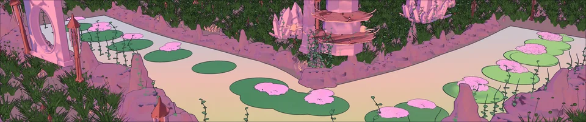
        <div style="padding: 0.75rem 1rem;">
          <strong style="display: block; font-size: 0.9rem; color: #ffffff;">2. Sakura Dawn Gold</strong>
          <span style="font-size: 0.75rem; color: #94a3b8;">Apricot Sunrise</span>
        </div>
      </div>

      <div class="rs-variant-btn" data-id="variant_3_bioluminescent_midnight" data-title="Bioluminescent Midnight" data-desc="Obsidian Deep Abyss · Electric Cyan Waves · Radiant Neon Petals" style="cursor: pointer; border-radius: 12px; overflow: hidden; border: 2px solid transparent; background: rgba(255, 255, 255, 0.04); transition: transform 0.2s ease, border-color 0.2s ease;">
        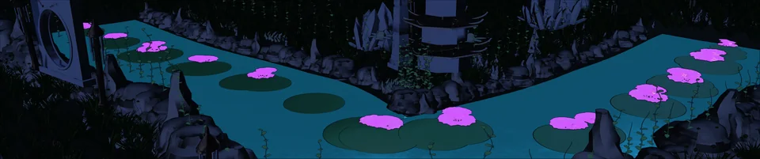
        <div style="padding: 0.75rem 1rem;">
          <strong style="display: block; font-size: 0.9rem; color: #ffffff;">3. Bioluminescent</strong>
          <span style="font-size: 0.75rem; color: #94a3b8;">Deep Neon Chroma</span>
        </div>
      </div>

      <div class="rs-variant-btn" data-id="variant_4_atlus_graphic_cel" data-title="Atlus Graphic Novel" data-desc="Persona Ben-Day Halftone · Crimson Lotus · Comic Ink Contrast" style="cursor: pointer; border-radius: 12px; overflow: hidden; border: 2px solid transparent; background: rgba(255, 255, 255, 0.04); transition: transform 0.2s ease, border-color 0.2s ease;">
        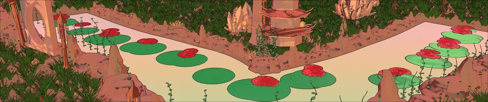
        <div style="padding: 0.75rem 1rem;">
          <strong style="display: block; font-size: 0.9rem; color: #ffffff;">4. Atlus Graphic Cel</strong>
          <span style="font-size: 0.75rem; color: #94a3b8;">Persona Pop Halftone</span>
        </div>
      </div>

      <div class="rs-variant-btn" data-id="variant_5_ghibli_summer_noon" data-title="Ghibli Summer Noon" data-desc="Pristine Cerulean Sky · Mountain Spring Emerald · Pure White Water Lilies" style="cursor: pointer; border-radius: 12px; overflow: hidden; border: 2px solid transparent; background: rgba(255, 255, 255, 0.04); transition: transform 0.2s ease, border-color 0.2s ease;">
        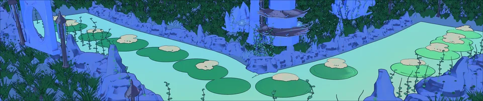
        <div style="padding: 0.75rem 1rem;">
          <strong style="display: block; font-size: 0.9rem; color: #ffffff;">5. Ghibli Summer</strong>
          <span style="font-size: 0.75rem; color: #94a3b8;">Mountain Spring Azure</span>
        </div>
      </div>

    </div>

    <!-- Technical Architecture Cards -->
    <div style="display: grid; grid-template-columns: repeat(auto-fit, minmax(280px, 1fr)); gap: 1.5rem;">
      <div style="background: rgba(255, 255, 255, 0.03); border: 1px solid rgba(255, 255, 255, 0.08); border-radius: 12px; padding: 1.5rem;">
        <h4 style="color: #a5b4fc; margin-top: 0; font-size: 1.05rem;">01 · Procedural Curve Drift</h4>
        <p style="font-size: 0.86rem; color: #cbd5e1; line-height: 1.6; margin: 0;">24 lily pads and 16 lotus blossoms sampled along 876 centerline points. Instances calculate continuous parameter $u(t) = (u_0 + v \cdot t) mod 1.0$, normal cross-channel offsets, tangent yaw rotation, and water ripple bobbing with smooth edge fade.</p>
      </div>
      <div style="background: rgba(255, 255, 255, 0.03); border: 1px solid rgba(255, 255, 255, 0.08); border-radius: 12px; padding: 1.5rem;">
        <h4 style="color: #a5b4fc; margin-top: 0; font-size: 1.05rem;">02 · Multi-Pass LookDev Grading</h4>
        <p style="font-size: 0.86rem; color: #cbd5e1; line-height: 1.6; margin: 0;">Real-time LookDev compositing pipeline featuring Kira 8-ray cross sparkles (<code style="color:#f472b6;">PASS_22</code>), starlight anamorphic horizontal glints (<code style="color:#f472b6;">PASS_16</code>), FLIP caustics dispersion (<code style="color:#f472b6;">PASS_10</code>), and Ben-Day halftone penumbra (<code style="color:#f472b6;">PASS_04</code>).</p>
      </div>
      <div style="background: rgba(255, 255, 255, 0.03); border: 1px solid rgba(255, 255, 255, 0.08); border-radius: 12px; padding: 1.5rem;">
        <h4 style="color: #a5b4fc; margin-top: 0; font-size: 1.05rem;">03 · High-Performance SSOT</h4>
        <p style="font-size: 0.86rem; color: #cbd5e1; line-height: 1.6; margin: 0;">GPU instancing maintains locked 60.0 FPS at native 4590×960 resolution. Externalized via Embody to version-controlled TDN format with Envoy MCP live network orchestration.</p>
      </div>
    </div>
  </div>
</section>

<script>
(function() {
  const btns = document.querySelectorAll('.rs-variant-btn');
  const masterImg = document.getElementById('rs-master-plate');
  const titleEl = document.getElementById('rs-master-title');
  const descEl = document.getElementById('rs-master-desc');
  if (!btns.length || !masterImg) return;

  btns.forEach(btn => {
    btn.addEventListener('click', () => {
      btns.forEach(b => {
        b.style.borderColor = 'transparent';
        b.style.transform = 'none';
      });
      btn.style.borderColor = '#818cf8';
      btn.style.transform = 'translateY(-2px)';

      const id = btn.getAttribute('data-id');
      const title = btn.getAttribute('data-title');
      const desc = btn.getAttribute('data-desc');

      if (titleEl) titleEl.textContent = title;
      if (descEl) descEl.textContent = desc;

      masterImg.style.opacity = '0.4';
      const newSrc = `assets/touchdesigner/${id}.webp`;
      const pre = new Image();
      pre.src = newSrc;
      pre.onload = () => {
        masterImg.src = newSrc;
        masterImg.style.opacity = '1';
      };
    });
  });
})();
</script>


<section class="band paper">
  <div class="inner">
    <div class="section-head">
      <div>
        <p class="eyebrow magazine-kicker">Why it exists</p>
        <h2>Live polish, not a second runtime.</h2>
      </div>
      <p>TD is the fast layer for visual breathing, beat capture, and preview orchestration around MelodiaCore and the site.</p>
    </div>
    <div class="card-grid">
      <article class="card premium-card">
        <span>Audio</span>
        <div>
          <h3>Beat stream and music reactivity.</h3>
          <p>OSC beat pulse / beat phase, bloom response, and subtle environment motion for the opening slice.</p>
        </div>
      </article>
      <article class="card premium-card">
        <span>Bridge</span>
        <div>
          <h3>Envoy MCP orchestration.</h3>
          <p>Use the TD MCP server to drive networks, inspect operators, and keep the build diffable and rerunnable.</p>
        </div>
      </article>
      <article class="card premium-card">
        <span>Preview</span>
        <div>
          <h3>Worldgen and render proof.</h3>
          <p>TouchDesigner sits between Blender exports and Unreal captures so the ecosystem can iterate in real time.</p>
        </div>
      </article>
    </div>
  </div>
</section>

<section class="band astral">
  <div class="inner">
    <div class="section-head">
      <div>
        <p class="eyebrow magazine-kicker">Bridge map</p>
        <h2>Ports, scripts, and authority.</h2>
      </div>
      <p>Current prep already has Envoy on 9870; OSC stays on the documented battle and beat routes.</p>
    </div>
    <div class="table-list">
      <div class="table-row">
        <span>Envoy</span>
        <div>
          <h3>TD MCP server</h3>
          <p><code>localhost:9870</code> · drive TD Python, inspect ops, and externalize networks.</p>
        </div>
        <b>Live</b>
      </div>
      <div class="table-row">
        <span>OSC</span>
        <div>
          <h3>Battle / beat routing</h3>
          <p><code>wire_battle_osc.py</code> and <code>wire_beat_stream.py</code> keep the game and TD layer in sync.</p>
        </div>
        <b>9000</b>
      </div>
      <div class="table-row">
        <span>Worldgen</span>
        <div>
          <h3>TouchDesigner world builder</h3>
          <p><code>world_builder.py</code> and <code>verify_worldgen.py</code> keep the 13-piece modular preview rerunnable.</p>
        </div>
        <b>TD</b>
      </div>
      <div class="table-row">
        <span>Web</span>
        <div>
          <h3>Site surfaces</h3>
          <p>Melodia Melusina, gameplay loop, application hub, and the TD page all share the same editorial language.</p>
        </div>
        <b>Live</b>
      </div>
    </div>
  </div>
</section>

<section class="band paper">
  <div class="inner">
    <div class="section-head">
      <div>
        <p class="eyebrow magazine-kicker">TouchDesigner lookdev · curated 2026-09-27</p>
        <h2>Selected live lookdev and systems proof.</h2>
      </div>
      <p>Pixel-reviewed TouchDesigner plates from the September 23–26 runs. This edit keeps only frames with a clear visual or technical read; the wider export matrix stays archive-only. These are realtime lookdev and diagnostic plates — not Unreal gameplay footage.</p>
    </div>

    <!-- Sep 27 pixel review: near-flat, duplicated, or mislabeled exports remain archive-only.
         Couture isolation buffers are not promoted until they contain a readable subject/material comparison. -->
    <div class="escher-carousel" id="escherCarousel">
      <div class="carousel-track">
        <div class="carousel-slide active">
          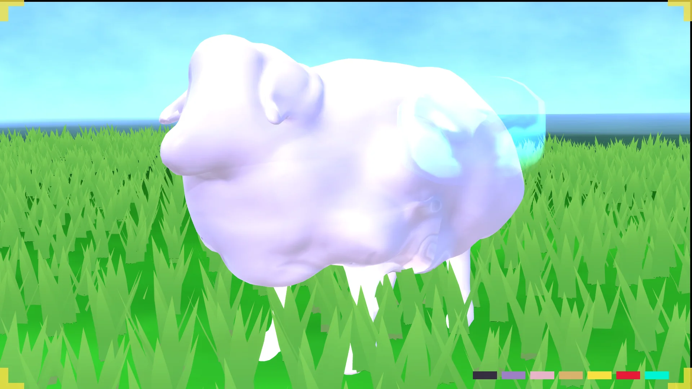
          <div class="slide-caption">
            <h3>Choral Sheep Sanctuary — Lookdev Beauty</h3>
            <p>Readable hero-companion silhouette and pasture staging from the September 23 TouchDesigner pass. Process lookdev, not Unreal gameplay.</p>
          </div>
        </div>
        <div class="carousel-slide">
          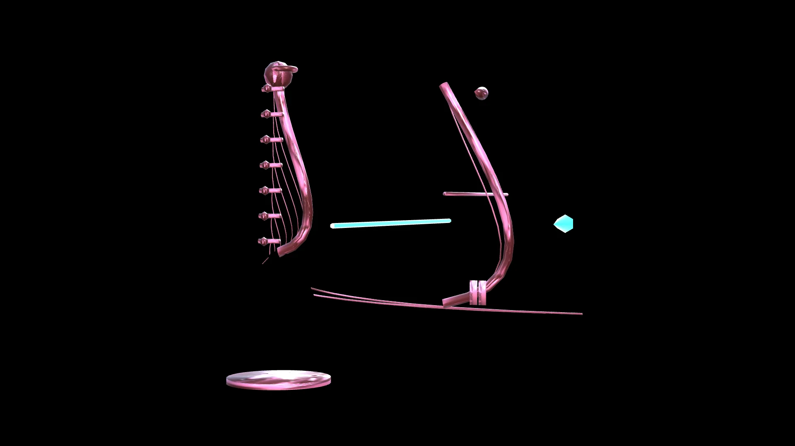
          <div class="slide-caption">
            <h3>Siren Harp Bow — Structure Pass</h3>
            <p>Clean isolated prop read from the September 26 suite: silhouette, strings, hardware and resonance elements without the motion treatment.</p>
          </div>
        </div>
        <div class="carousel-slide">
          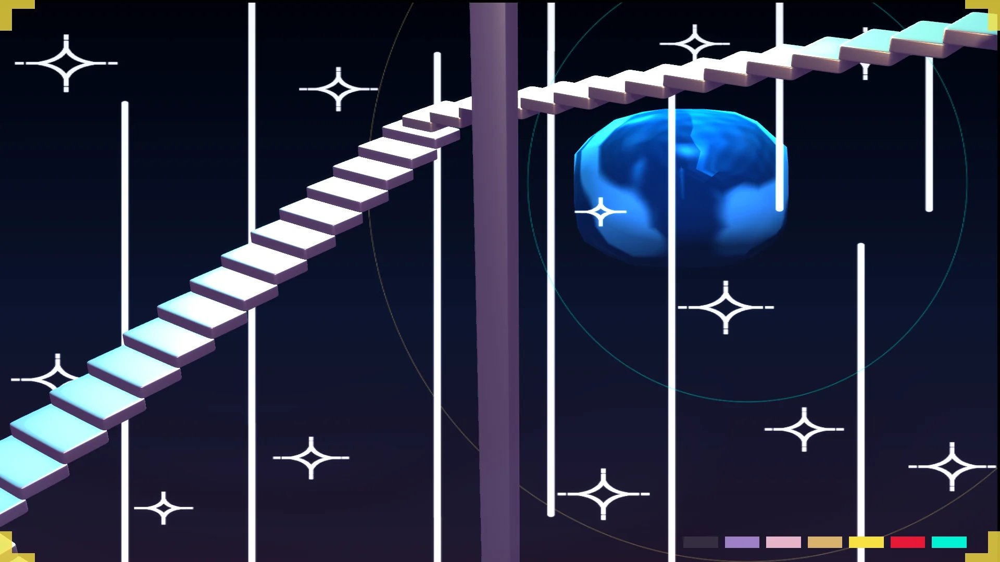
          <div class="slide-caption">
            <h3>Escher Sanctuary — Spatial Study</h3>
            <p>Earlier clean staircase composition retained for its readable environment structure and impossible-space language.</p>
          </div>
        </div>
        <div class="carousel-slide">
          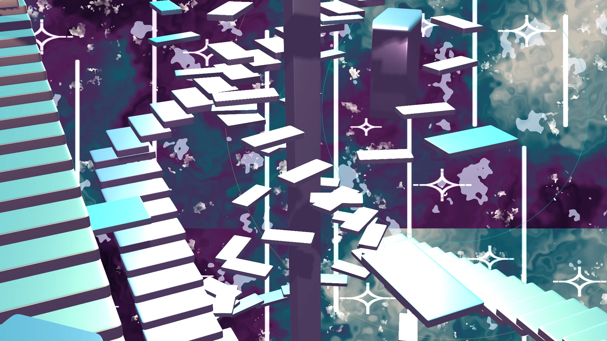
          <div class="slide-caption">
            <h3>Escher Sanctuary — Layered Procedural Composite</h3>
            <p>September 26 effect stack combining recursive platforms, field textures, vertical light guides and celestial ornament.</p>
          </div>
        </div>
        <div class="carousel-slide">
          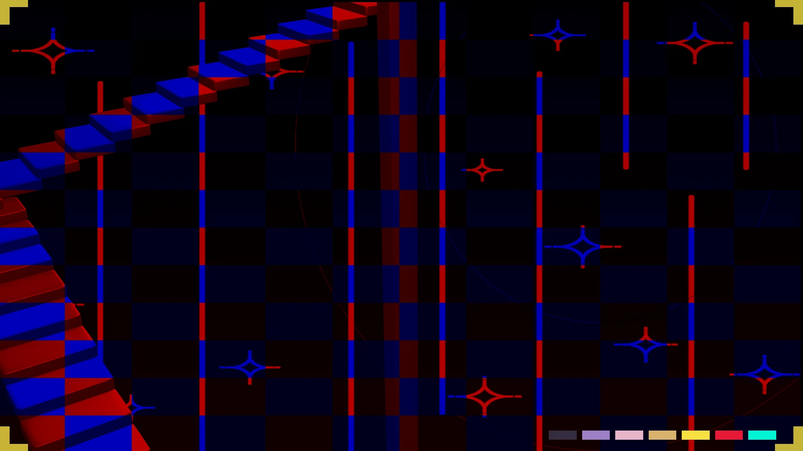
          <div class="slide-caption">
            <h3>Live Scene + Telemetry Overlay</h3>
            <p>Runtime presentation study pairing the Escher field with a live signal trace and inspection HUD.</p>
          </div>
        </div>
      </div>
      <button class="carousel-nav prev" aria-label="Previous slide">←</button>
      <button class="carousel-nav next" aria-label="Next slide">→</button>
      <div class="carousel-dots"></div>
    </div>
    <!-- Live 60 FPS Motion Loops -->
    <div style="margin-top: 36px; display: grid; grid-template-columns: repeat(auto-fit, minmax(320px, 1fr)); gap: 24px;">
      <div style="border-radius: 12px; overflow: hidden; background: #0c0c16; border: 1px solid rgba(255,255,255,0.08); box-shadow: 0 8px 32px rgba(0,0,0,0.4);">
        <video autoplay loop muted playsinline style="width: 100%; aspect-ratio: 16/9; object-fit: cover; display: block;">
          <source src="assets/touchdesigner/hero_05_universe_foundry_loop.webm" type="video/webm">
          <source src="assets/touchdesigner/hero_05_universe_foundry_loop.mp4" type="video/mp4">
        </video>
        <div style="padding: 16px;">
          <h4 style="margin: 0 0 6px 0; font-size: 1.05rem; color: #fff;">Faraway Mother 60 FPS Phase Flow</h4>
          <p style="margin: 0; font-size: 0.85rem; color: rgba(255,255,255,0.65);">Real-time Chladni (3,5) resonant excitation and nodal seam flow along the heart gate corridor (490 KB WebM).</p>
        </div>
      </div>
      <div style="border-radius: 12px; overflow: hidden; background: #0c0c16; border: 1px solid rgba(255,255,255,0.08); box-shadow: 0 8px 32px rgba(0,0,0,0.4);">
        <video autoplay loop muted playsinline style="width: 100%; aspect-ratio: 16/9; object-fit: cover; display: block;">
          <source src="assets/touchdesigner/hero_05b_universe_foundry_4quad_loop.webm" type="video/webm">
          <source src="assets/touchdesigner/hero_05b_universe_foundry_4quad_loop.mp4" type="video/mp4">
        </video>
        <div style="padding: 16px;">
          <h4 style="margin: 0 0 6px 0; font-size: 1.05rem; color: #fff;">4-Quadrant Live Diagnostic Telemetry</h4>
          <p style="margin: 0; font-size: 0.85rem; color: rgba(255,255,255,0.65);">Synchronous 60 FPS split: [TL] Resonance, [TR] Tension Delta, [BL] Phase Flow, [BR] Active Mask (511 KB WebM).</p>
        </div>
      </div>
    </div>
  </div>
</section>

<section class="band paper">
  <div class="inner">
    <div class="section-head">
      <div>
        <p class="eyebrow magazine-kicker">Process lab · September 26</p>
        <h2>Systems frames worth keeping public.</h2>
      </div>
      <p>These are deliberately framed as technical-art evidence rather than finished beauty renders: resonance diagnostics, procedural field generation, and layered scene instrumentation.</p>
    </div>
    <div style="display:grid;grid-template-columns:repeat(auto-fit,minmax(280px,1fr));gap:18px;">
      <figure style="margin:0;border-radius:12px;overflow:hidden;background:#0c0c16;border:1px solid rgba(255,255,255,.08);">
        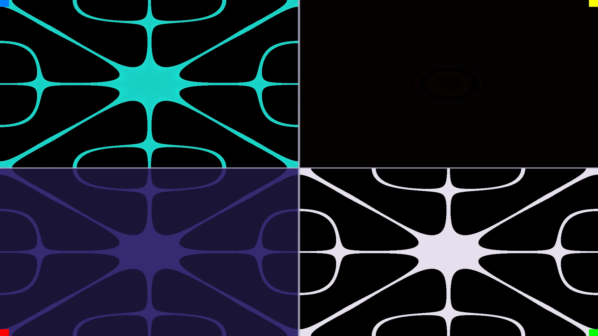
        <figcaption style="padding:14px 16px;"><strong>Resonance diagnostic matrix</strong><br><span style="opacity:.72;">Four synchronized views of the standing-wave field for live inspection.</span></figcaption>
      </figure>
      <figure style="margin:0;border-radius:12px;overflow:hidden;background:#0c0c16;border:1px solid rgba(255,255,255,.08);">
        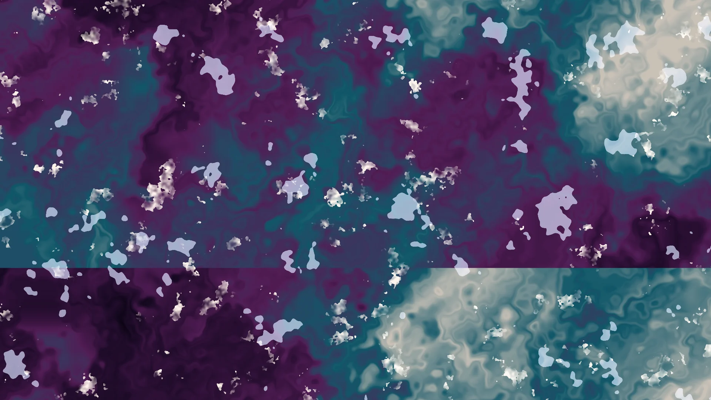
        <figcaption style="padding:14px 16px;"><strong>Procedural field composite</strong><br><span style="opacity:.72;">Organic noise, threshold islands and palette zoning used as a worldbuilding texture layer.</span></figcaption>
      </figure>
      <figure style="margin:0;border-radius:12px;overflow:hidden;background:#0c0c16;border:1px solid rgba(255,255,255,.08);">
        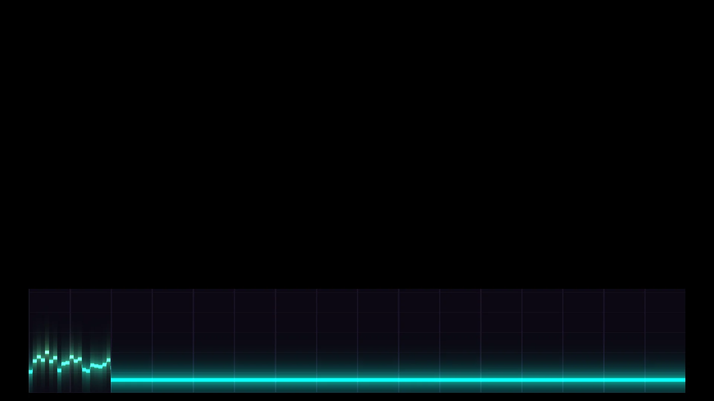
        <figcaption style="padding:14px 16px;"><strong>Signal telemetry HUD</strong><br><span style="opacity:.72;">Minimal realtime trace proving the monitoring layer independently from the scene composite.</span></figcaption>
      </figure>
    </div>
  </div>
</section>

<section class="band paper">
  <div class="inner">
    <div class="section-head">
      <div>
        <p class="eyebrow magazine-kicker">Polish run</p>
        <h2>Suggested execution order.</h2>
      </div>
      <p>Use this when warming the whole toolchain before a playtest or capture session.</p>
    </div>
    <ol class="kitbash-excluded" style="padding-left:1.25rem;">
      <li>Start TouchDesigner and confirm Envoy MCP on 9870.</li>
      <li>Run the battle OSC wiring, then the beat stream wiring.</li>
      <li>Confirm the UE-side rhythm reactivity subsystem is emitting beat pulse / phase.</li>
      <li>Capture a short worldgen or opening-slice preview and verify the note / bloom response.</li>
      <li>Return to the site pages and use the same language for the published proof.</li>
    </ol>
  </div>
</section>
</main>

<footer class="footer">
  <div class="inner">
    <span>Brennan Shepherd / TouchDesigner</span>
    <span>Envoy MCP + OSC + worldgen preview</span>
  </div>
</footer>
</div>
<script src="melodia-magical-girl.js"></script>
<script src="melodia-starfield.js"></script>
<script src="melodia-dream-shaders.js"></script>
<script src="melodia-site-nav.js"></script>
<script src="escher-carousel.js"></script>
<script src="melodia-editorial.js"></script>
<script>MelodiaEditorial.init({ page: 'touchdesigner-architecture' });</script>
</body>
</html>
